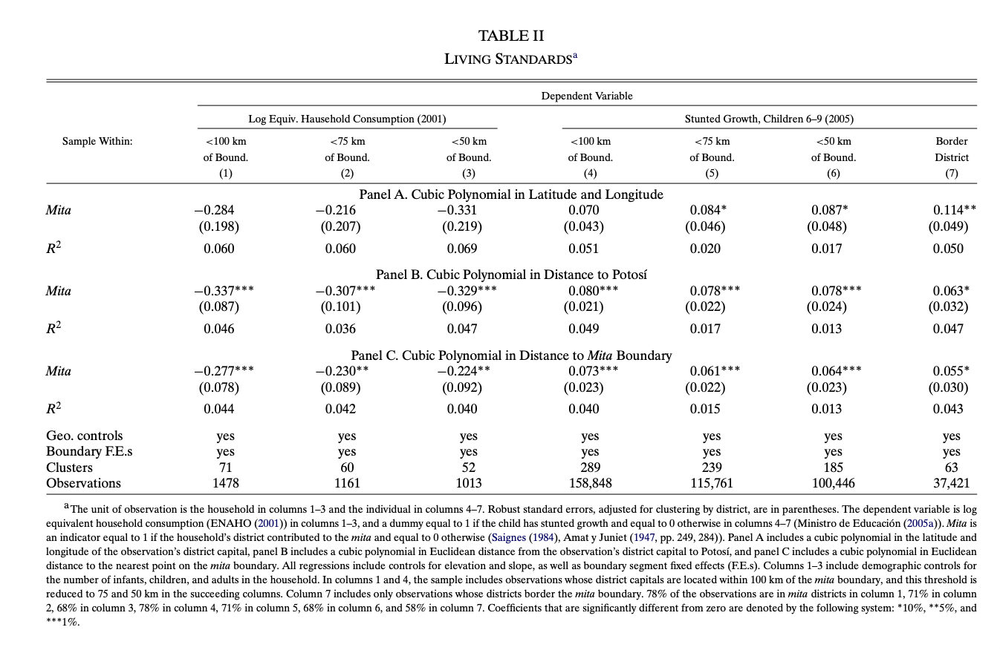

This page provides additional empirical details not shown on the poster due to space constraints.
The analysis estimates the causal effect of historical exposure to the mining mita using a geographic Regression Discontinuity design at the mita boundary.
These findings reflect long-run institutional persistence operating through land tenure systems and public goods provision.
The table below corresponds to the main regression results reported in Dell (2010), Table II.
Dell, M. (2010). The Persistent Effects of Peru’s Mining Mita. Econometrica.